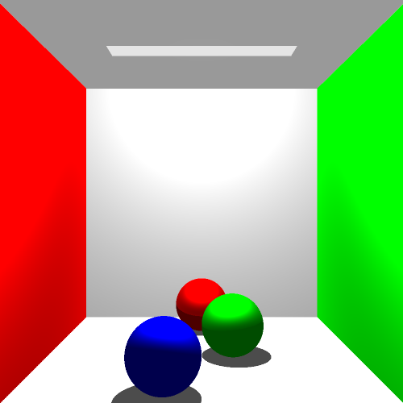
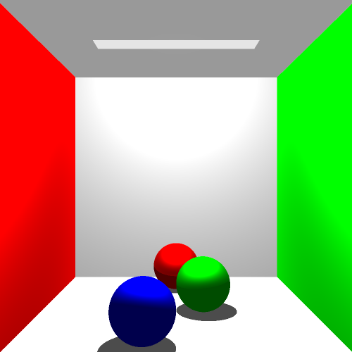Distributed Ray Tracer
By Boris Kravchenko
0 - Multithreading
I implemented lockless multithreading for A4. Here is some data I’ve collected
gl07 (6 core CPU) : macho cows (500x500) my laptop (quad core i7, VM): A4 final scene (1000x1000)
1 thread: real 1m53.324s user 1m53.263s sys 0m0.036s | 6 threads: real 0m22.983s user 2m9.788s sys 0m0.120s | 1 thread: real 3m37.005s user 3m36.858s sys 0m0.128s | 4 threads: real 1m1.170s user 3m52.495s sys 0m2.416s |
5x speedup 3.6x speedup
1 - Depth of Field
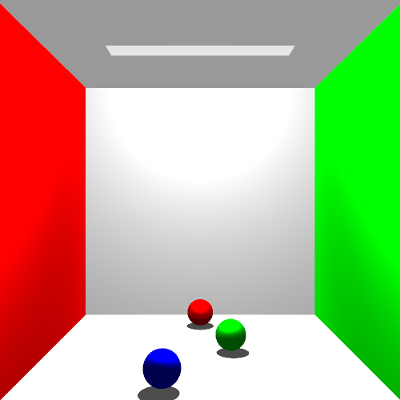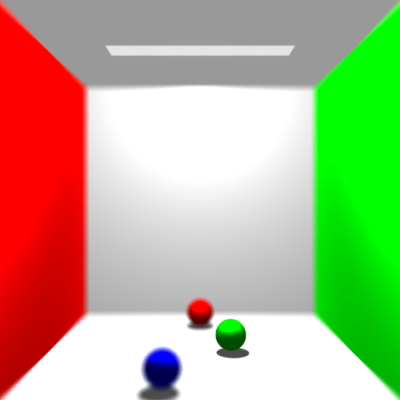
Aperture size - 1, focal length - 15
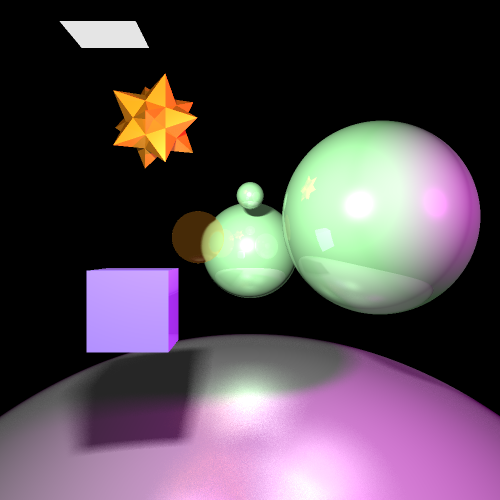
Aperture size - 30, focal length - 700
2 - Glossy Reflections
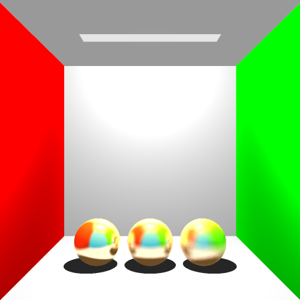
3 - Constructive Solid Geometry
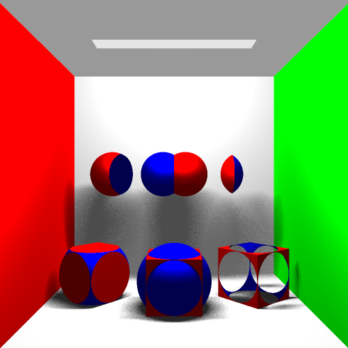
5 - Mirror Reflections
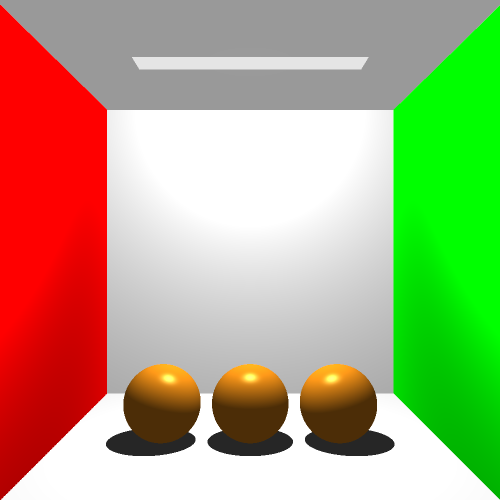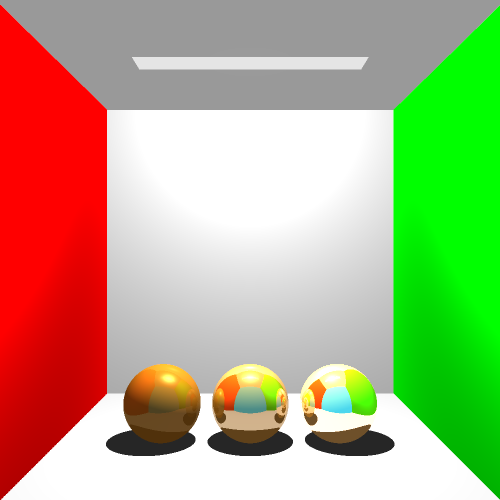
Non-mirror surface Reflectivity 10%, 50%, 90%
6 - Refractions
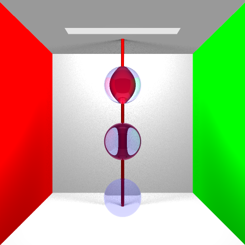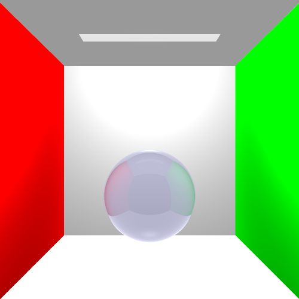
Indices from bottom to top: Fresnel Reflections
1.1, 1.52 (glass), 2
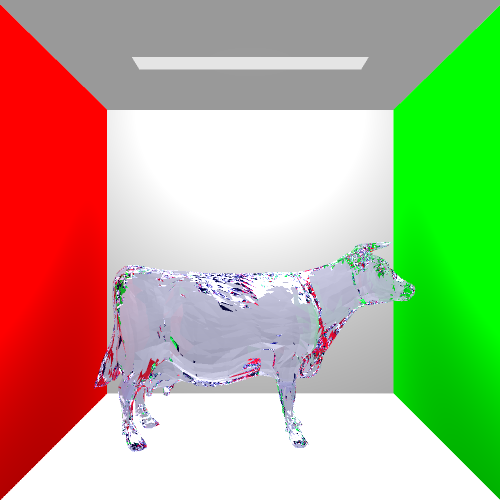
A Glass Cow
7 - Super Sampling Anti-Aliasing
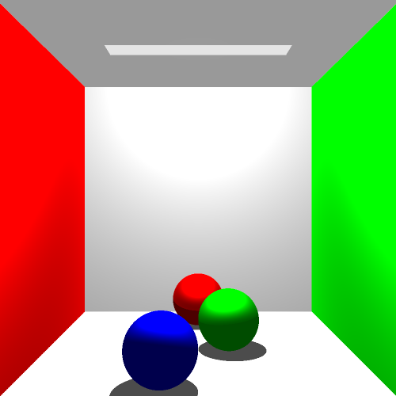
No Anti-Aliasing 2x Anti-Aliasing
8/10 - Area Lights and Soft Shadows, Additional Primitives
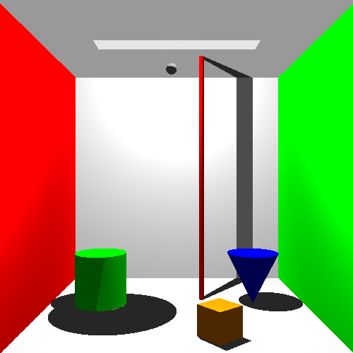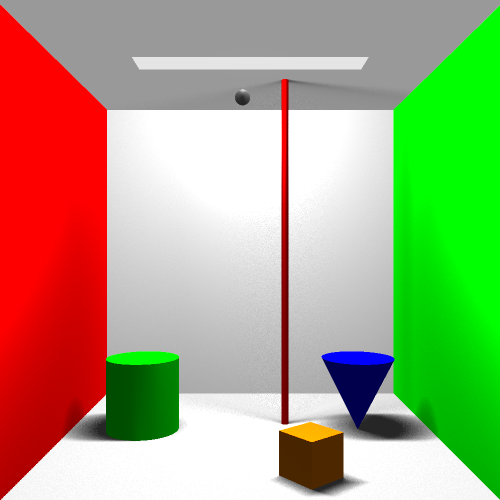
9 - Final Scene
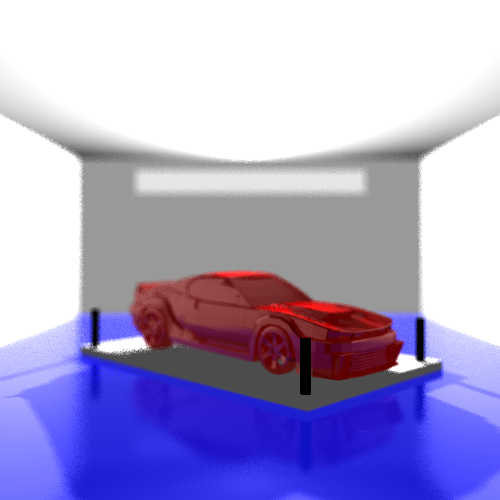
Model taken from: http://www.turbosquid.com/3d-models/free-3ds-mode-car-fictional/640082
11 - Extra: Refraction enhancements and translucency
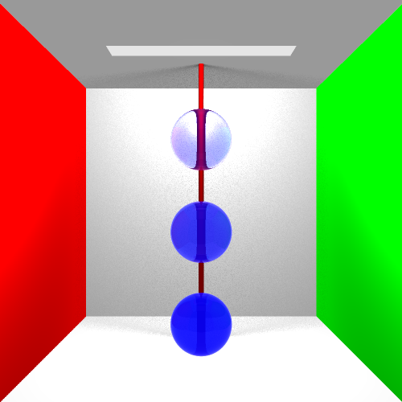
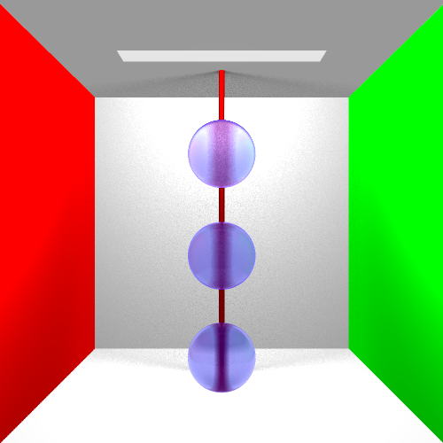